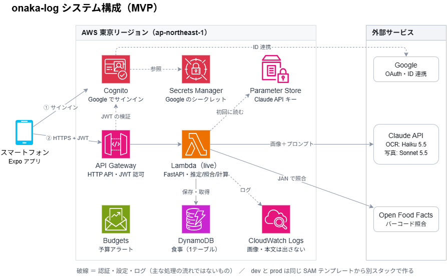

onaka-log
食品のカロリーと PFC（タンパク質・脂質・炭水化物）を読み取りと AI 推定で記録し、1日の摂取量を確認するスマホアプリ。
「人が入力する手間を極力なくす」ことを最優先に設計しています。
誰のためのアプリか
直近は開発者本人専用。将来はストアで一般公開できるよう、認証・マルチユーザー前提で作っています（ADR-0003）。
記録の単位
食事（Meal）1件に食品（FoodItem）N件。食品ごとの値と食事の合計の両方を持ちます。1日の境界は 4:00（日本時間）。
プライバシー
撮影画像は推定に使ったら即破棄。端末・サーバー・ログのどこにも残しません（ADR-0004）。Claude API キーはアプリに持たせません。
全体の流れ（ひと目で）
flowchart LR
U((利用者)) --> APP[Expo アプリ
iOS / Android]
APP -->|JWT| GW[API Gateway]
GW --> L[Lambda
FastAPI]
L --> DB[(DynamoDB)]
L -->|成分表示 OCR / 写真推定| C[Claude API]
L -->|バーコード照合| OFF[Open Food Facts]
APP -.サインイン.-> COG[Cognito
Google / Apple]
機能
4つの入力方式
① バーコード照合
F-011JAN コードを読み、Open Food Facts から商品名・栄養値・内容量を取得。値の出どころを表示し、登録ミスに備えて成分表示 OCR へワンタップで切り替え可能。
② 栄養成分表示 OCR
F-012パッケージの栄養成分表示を撮影し、Claude Haiku 5.5（effort low）で基準量・栄養値・内容量を読み取る。味違いなど複数列があれば全列を返し、利用者が選ぶ。
③ 写真からの AI 推定
F-013料理を撮影し、Claude Sonnet 5.5（effort medium）で品目ごとに料理名・量・kcal・PFC を推定。定食なら器ごとに分解。値は「目安」としてそのまま登録。
④ 手入力
F-014食品名と kcal・P・F・C の5項目をすべて入力（必須）。①〜③で推定できない・不正確なときの最後の手段。換算や分量選択はしない。
機能一覧（F-xxx）
| ID | 機能 | 区分 | 概要 |
|---|---|---|---|
| F-001 | サインイン・サインアウト | MVP | Sign in with Apple と Google。記録は利用者ごとに分離 |
| F-002 | アカウントと記録の削除 | 公開前 | App Store 審査要件。DELETE /v1/me 予定 |
| F-010 | 入力方式の選択 | MVP | ホームの「記録する」で開くシートから4方式を選ぶ |
| F-011〜014 | 入力方式 ①〜④ | MVP | 上のカードのとおり |
| F-020 | 確認・修正画面 | MVP | 出どころ・基準・内容量不明の表示、列の選択、分量のワンタップ、料理名の修正、食べた日時の変更 |
| F-021 | 読み取れないときの案内 | MVP | エラーダイアログ（撮り直す・撮り方の案内・手入力・方式選択に戻る） |
| F-030 | 食事への追加・保存 | MVP | 確認した食品で食事を作る。後から同じ食事に食品を足せる |
| F-031 | 日次合計と食事一覧 | MVP | 4:00 区切りの1日の kcal・PFC 合計と、食事の時刻順一覧 |
| F-032 | 食事・食品の削除 | MVP | 確認なしで削除し約5秒「元に戻す」。0件になった食事は自動削除 |
| F-040〜043 | 推移グラフ・目標値・お気に入り・栄養素拡張 | 次期 | MVP 外 |
| F-044〜045 | エクスポート・成分表データでの手入力補助 | 将来 | — |
仕様
MVP の主要ルール
| 区分 | 内容 |
|---|---|
| 分量 | 人は入力しない。既定は「全部食べた」。確認画面のワンタップ（1/4・1/2・3/4・全部）で直せる。「1個当たり」表示で複数個入りなら既定は「1個」で個数を選ぶ |
| 1日の境界 | 4:00。0:00〜3:59 の食事は前日分。タイムゾーンは日本時間に固定 |
| 食べた日時 | 既定は記録した時刻。確認画面で過去の日時に変更可（未来は不可）。保存後は変えない |
| 読み取れない場合 | エラーダイアログ。「撮り直す」と撮り方の案内（正面から・近づけて）、「手入力する」「入力方法の選択に戻る」 |
| 内容量が不明 | エラーにせず登録する。基準（100g 当たり等）と「内容量：不明」を必ず一緒に保存・表示（ADR-0009） |
| 削除 | 確認ダイアログなし。約5秒「元に戻す」。アプリが削除 API の送信を遅らせて実現（サーバーは物理削除） |
| 認証 | 最初から入れる。Sign in with Apple + Google（Apple は Apple Developer Program 登録後） |
分量の決め方（方式別）
| 方式 | 取れる値 | 既定の分量 |
|---|---|---|
| バーコード | 100g 当たり／1食当たりの値、内容量 | 1包装を全部。内容量で換算 → なければ「1食当たり（推定）」→ それもなければ「100g 当たり・内容量：不明」 |
| OCR | 表示の基準量（1袋・100g・1個など）と値、内容量 | 1包装を全部。100g 当たりなら読み取った内容量で換算 |
| 写真推定 | AI が推定した料理名・量・kcal・PFC | 写っている量を全部 |
| 手入力 | 利用者が入力した値 | 入力値をそのまま（換算なし） |
記録フロー
flowchart TD
Home[ホーム: 記録する] --> Sheet[入力方式の選択シート]
Sheet -->|バーコード / 成分表示 / 写真| Get[読み取り・推定]
Sheet -->|手入力| Confirm
Get -->|成功| Confirm[確認・修正画面
分量・列・日時を変更可]
Get -->|失敗| Err[エラーダイアログ
撮り方の案内]
Err -->|撮り直す| Get
Err -->|入力方法の選択に戻る| Sheet
Err -->|手入力する| Confirm
Confirm --> Save[食事に追加して保存]
Save --> Home
画面
| 画面 | 機能 | 主な API |
|---|---|---|
| サインイン | F-001 | Cognito（Hosted UI） |
| ホーム（1日の記録） | F-031 | GET /v1/days/{date} |
| 入力方式の選択（シート） | F-010 | — |
| バーコード読み取り | F-011 | GET /v1/products/{code} |
| 撮影（成分表示・料理） | F-012, F-013 | POST /v1/estimates/* |
| 確認・修正 ★最重要 | F-020, F-014 | POST /v1/meals |
| 食事の詳細 | F-020, F-032 | GET / DELETE …/meals/{id} |
| 設定 | F-001 | — |
手数の目標（UIX-12）
- 記録する
- 写真
- シャッター
- 保存
写真・成分表示は4タップ、バーコードは3タップ（自動で読む）。分量・列を変えるとそれぞれ＋1。
- 08:00 職場のお菓子150
- 12:30 カップ麺351
- 19:15 ご飯、ハンバーグ…702
非機能要件
| ID | 区分 | 要件 |
|---|---|---|
| NFR-001 | コスト | 運用コストは月1,000円程度まで（Claude API とホスティングの合計） |
| NFR-002 | プライバシー | 撮影画像を端末・サーバー・ログのどこにも保存しない |
| NFR-003 | 対応 OS | iOS・Android の両方（Android はエミュレーターで検証） |
| NFR-004 | セキュリティ | Claude API キーをアプリに持たせない（バックエンド経由で呼ぶ） |
| NFR-005 | 拡張性 | 将来のストア公開（マルチユーザー）に作り直しなしで移れる |
| NFR-006 | 操作性 | 記録時の入力の手間を極力なくす（キーボード入力は最終手段） |
設計
全体構成（AWS）

| 要素 | 役割 |
|---|---|
| Expo アプリ | 画面、カメラ・バーコード読み取り、画像の縮小（長辺 1024px の JPEG）、トークンの安全な保存 |
| Cognito | Apple・Google でのサインイン、JWT の発行 |
| API Gateway（HTTP API） | 入口。JWT を検証してから Lambda に渡す。スロットリング（5 req/s、バースト 10） |
| Lambda（FastAPI） | API 全体を1関数で実行。推定・照合・換算・検証・保存 |
| DynamoDB | 食事の保存（1テーブル） |
| SSM Parameter Store | Claude API キー（SecureString） |
| Claude API | 栄養成分表示の読み取り、写真からの推定 |
| Open Food Facts | バーコード照合。換算規則と利用規約の遵守をまとめるためバックエンドから呼ぶ |
主要な設計判断
サーバーファースト
記録の正は DynamoDB。アプリは表示用に一時的に持つだけ。端末 DB と同期は作らない（ADR-0015）。
推定は同期 API・保存は別 API
推定結果は保存せず、利用者が確認画面で直した結果だけを保存する。応答は 4〜5 秒で API Gateway の 30 秒上限に収まる。
計算はバックエンド
食べた量の値・合計はバックエンドが計算する。アプリから送られた計算値は使わず、ドメインのルールを1か所に集める。
撮影して推定 → 保存するシーケンス
sequenceDiagram
participant A as アプリ
participant G as API Gateway
participant L as Lambda
participant C as Claude API
participant D as DynamoDB
A->>A: 撮影・長辺1024pxに縮小（画像は端末にも残さない）
A->>G: POST /v1/estimates/*（画像 base64、JWT）
G->>L: 検証済みの利用者IDつきで呼ぶ
L->>C: 画像＋プロンプト（Structured Outputs）
C-->>L: JSON
L->>L: スキーマと意味ルールで検証、画像を破棄
L-->>A: 推定結果（status・食品の候補）
A->>A: 確認・修正画面（分量・列・個数・日時）
A->>G: POST /v1/meals（食品・分量、UUIDv7）
G->>L: 検証済みの要求を渡す
L->>L: 倍率・食べた量の値・合計を計算、DM-01〜09 を検証
L->>D: PutItem（同じIDがないことを条件）
L-->>A: 保存した食事
ドメインモデル
classDiagram
class User { user_id（Cognito の sub） }
class Meal {
meal_id（UUIDv7）
eaten_at（日本時間）
record_date（4:00 区切り）
totals : Nutrients
totals_incomplete
version
}
class FoodItem {
item_id（UUIDv7）
name
nutrients（食べた量の値）
estimate_detail
}
class Source { method / provider / product_code / estimation / confidence }
class Reference { basis（何当たりか） / net_content（内容量） / nutrients（元の値） }
class Portion { mode（whole / fraction / pieces） / multiplier }
User "1" --> "*" Meal
Meal "1" *-- "1..*" FoodItem
FoodItem *-- Source
FoodItem *-- Reference
FoodItem *-- Portion
値の決まり方
nutrients = reference.nutrients × portion.multiplier
（小数第1位で四捨五入、null は「不明」）
- 100g 当たり＋内容量あり → 「全部」の倍率は 内容量 ÷ 100
- 100g 当たり＋内容量不明 → 1（100g 食べたとみなす）
- 1個当たり＋個数あり → 個数（既定は1個を選択）
- 1包装・1食・写真推定・手入力 → 1
例: 100g 当たり 450kcal・内容量 76g・全部 → 倍率 0.76 → 342kcal
ドメインのルール（不変条件）
- DM-01 record_date = eaten_at − 4時間の日付
- DM-02 totals は食品の和（null は 0、不明は totals_incomplete に記録）
- DM-03 食べた量の値 = 元の値 × 倍率
- DM-04 倍率は基準と分量の規則どおり
- DM-05 方式と基準の組み合わせ（写真は as_estimated など）
- DM-06 個数指定は 1個当たりのときだけ、手入力は whole だけ
- DM-07 食事内で item_id は重複しない
- DM-08 食事には食品が1件以上（0件なら食事ごと削除）
- DM-09 手入力は kcal・P・F・C すべて必須
データモデル（DynamoDB・1テーブル）
| 属性 | 例 | 説明 |
|---|---|---|
PK | USER#3f1c… | パーティションキー（Cognito の sub） |
SK | MEAL#2026-11-13#12:30:05#0190f3a2-… | 記録日＋時刻＋食事ID。1日分を時刻順に Query で取れる |
items | List of Map | 食品は食事の中に埋め込む（1食事は数 KB） |
version | 1, 2, … | 食品の追加・削除時の楽観的ロック |
- ID は UUIDv7 をアプリで生成。再送しても同じ ID になり、
attribute_not_exists条件で二重保存を防ぐ - 利用者 ID はアプリから受け取らず JWT の
subだけを使う。他人のデータは読めない・消せないことをテスト済み - 削除は物理削除。更新履歴は持たない。GSI は MVP では作らない
API（REST + OpenAPI 3.1）
| メソッドとパス | 機能 | 説明 |
|---|---|---|
POST /v1/estimates/label | F-012 | 成分表示の画像から食品の候補（列ごと）。保存しない |
POST /v1/estimates/photo | F-013 | 料理の画像から品目ごとの候補。保存しない |
GET /v1/products/{product_code} | F-011 | Open Food Facts で照合し候補を返す |
POST /v1/meals | F-030 | 食事を作って保存 |
GET /v1/days/{record_date} | F-031 | 1日分の食事と日次合計 |
GET /v1/days/{d}/meals/{meal_id} | F-020 | 食事1件 |
DELETE /v1/days/{d}/meals/{meal_id} | F-032 | 食事を削除 |
POST /v1/days/{d}/meals/{meal_id}/items | F-030 | 既存の食事に食品を足す |
DELETE /v1/days/{d}/meals/{meal_id}/items/{item_id} | F-032 | 食品を消す（最後の1件なら食事ごと） |
候補 → 入力の受け渡し
flowchart LR
E[推定・照合 API] -->|FoodItemDraft
名前・出どころ・元の値・分量の既定| C[確認画面]
C -->|FoodItemInput
候補＋item_id＋選んだ分量| S[保存 API]
S -->|計算と検証| D[(DynamoDB)]
「読めない」「見つからない」は HTTP 200 の status で返す（unreadable / not_food / not_found など）。
エラー体系 {"error": {"code", "message"}}
画面の文言はアプリが code から決める。409 の再送系は成功として扱い取得し直す。
Claude API の利用設計
| 用途 | モデル | 出力スキーマ | prompt_version | 結果の status |
|---|---|---|---|---|
| nutrition-label-ocr | claude-haiku-5-5（low） | v0.3（列ごとの columns） | 0.2.0 | ok / unreadable / not_nutrition_label |
| food-photo-estimate | claude-sonnet-5-5（medium） | v0.1 | 0.2.0 | ok / not_food / unrecognizable |
- 入出力は
contracts/llm/<usecase>/の JSON Schema で定義し、Structured Outputs で出力を強制。API が未対応の制約はバックエンドで再検証 - 推定に使ったモデル ID・prompt_version・スキーマの
$idを食品ごとに保存（Claude の生出力と画像は保存しない） - モデル・effort は環境変数（
ONAKA_LABEL_MODELなど）で差し替え可能 - refusal・max_tokens → 422、接続・タイムアウト・上流の 4xx/5xx → 502。画像内の指示に従わないルールをプロンプトに含める
技術スタック
モバイル（apps/mobile）
- React Native（Expo SDK 58）+ TypeScript（strict）— React 19.3 / RN 0.88
- Expo Router（ファイルベースのルーティング）
- TanStack Query（サーバー状態）、React の state / Context（状態管理ライブラリなし）
- openapi-typescript で型生成 ＋ openapi-fetch
- expo-auth-session（PKCE）＋ expo-secure-store
- expo-camera（撮影・EAN-13/8）、expo-image-manipulator
- @react-native-community/datetimepicker（日本時間に固定）
バックエンド（apps/api）
- Python 3.12 / FastAPI、uv（ワークスペース・ロック）
- AWS Lambda Web Adapter（uvicorn をそのまま Lambda で起動）
- anthropic（Claude SDK）、httpx（Open Food Facts）、boto3
- jsonschema ＋ pyyaml：契約のスキーマで直接リクエストを検証（Pydantic モデルは書かない）
インフラ
- AWS（東京 ap-northeast-1）：API Gateway HTTP API、Lambda（arm64）、DynamoDB、Cognito、SSM、Secrets Manager、CloudWatch Logs
- AWS SAM（IaC）、cfn-lint
- 認証は IAM Identity Center（長期アクセスキーは作らない）
テスト・品質・CI
- pytest、FastAPI TestClient ＋ DynamoDB Local、openapi-spec-validator
- Jest（jest-expo）＋ React Native Testing Library、E2E は Maestro（予定）
- Ruff、mypy（domain は strict）、ESLint ＋ Prettier
- GitHub Actions（Action は SHA 固定・最小権限）
インフラ
環境
| 環境 | 用途 | 中身 | 状態 |
|---|---|---|---|
| local | 日常の開発・テスト | uvicorn で FastAPI。保存先はメモリか DynamoDB Local（Docker）。Claude はテストではモック | 稼働 |
| dev | Lambda 固有の確認、アプリとの結合 | スタック onaka-log-dev（AWS 一式） | デプロイ済み |
| prod | 日常利用 | スタック onaka-log-prod。削除保護・Retain・PITR | 未作成 |
SAM テンプレートのリソース（infra/template.yaml）
| リソース | 設定の要点 |
|---|---|
| MealsTable（DynamoDB） | onaka-log-<env>。prod は削除保護・PITR |
| UserPool / Domain / AppClient（Cognito） | マネージドログイン。Google IdP 連携（Apple は後日）。dev のみテスト用にメール＋パスワードも残す |
| GoogleIdentityProvider | クライアントシークレットは Secrets Manager を {{resolve:secretsmanager:…}} で参照 |
| HttpApi（API Gateway） | JWT オーソライザー、スロットリング 5 req/s・バースト 10 |
| ApiFunction（Lambda） | python3.12・arm64・512MB・タイムアウト 29 秒・Lambda Web Adapter。SSM は ssm:GetParameter だけ許可 |
| ApiFunctionLogGroup | 保持 14 日（画像はログに出さない） |
デプロイ手順（手元から・WSL）
export SAM_CLI_TELEMETRY=0 # 検査（CI と同じ） (cd infra && sam validate --lint && cfn-lint template.yaml) # Lambda 用コードを uv.lock どおりに作る（sam build は使わない） UV=~/.local/bin/uv UV_LINK_MODE=copy bash infra/build.sh # デプロイ（変更セットを確認してから適用） aws sso login --profile onaka-admin (cd infra && sam deploy --config-env dev --profile onaka-admin)
CI からのデプロイ（GitHub OIDC）はまだない（CIC-05・CIC-09）。
シークレットとセキュリティ
- Claude API キー：SSM Parameter Store
/onaka-log/<env>/claude-api-key（SecureString、手で投入） - Google OAuth シークレット：Secrets Manager
onaka-log/<env>/google-client-secret（SSM は Cognito IdP から参照できないため） - 利用者 ID は JWT の sub のみ、DynamoDB は
PK = USER#<sub>でしか読まない - AWS Budgets：月 7 ドル、50%・80%・予測 100% で通知
費用の見込み（自分専用・月）
| 項目 | 見込み |
|---|---|
| Claude API（写真推定 月90回 ＋ OCR） | 約170円＋数円 |
| Lambda・API Gateway・DynamoDB・Cognito | ほぼ0円（無料枠） |
| Secrets Manager（Google シークレット） | $0.40 |
| CloudWatch Logs | 数円 |
| 合計 | 約200〜250円（上限 1,000円） |
実装
リポジトリ構成（モノレポ）
onaka-log/
├── apps/
│ ├── api/ # バックエンド（FastAPI、uv ワークスペース）
│ └── mobile/ # アプリ（Expo、npm）
├── contracts/ # 契約（SSOT）
│ ├── api/openapi.yaml
│ ├── domain/meal.schema.json
│ └── llm/{nutrition-label-ocr,food-photo-estimate}/ # 入出力スキーマ・prompt.md・例
├── infra/ # AWS SAM（template.yaml・samconfig.toml・build.sh）
├── tests/contract/ # 契約テスト（スキーマ・例・ルールの参照実装）
├── poc/ # PoC のスクリプトとレポート
├── tools/trace.py # 仕様 ID とテストの対応検査
├── docs/ # 要件・設計・ADR・ロードマップ
└── .github/workflows/ # contract / api / mobile / infra
バックエンド API まで完成
domain/ | 倍率・合計・記録日・検証（DM-01〜09）。外部依存なし、行カバレッジ 98% |
estimation/ | Claude の出力・OFF の応答から候補（FoodItemDraft）を作り、スキーマで検証 |
api/app.py | 9つの API、利用者 ID、検証、エラー変換。依存は Deps で注入 |
clients/ | Claude（claude.py）・Open Food Facts（off.py） |
repository/ | DynamoDB 実装とメモリ実装（同じテストで両方を検証） |
settings.py | 環境変数 ONAKA_* から設定 |
アプリ 実装中
src/app/ | Expo Router のルート（薄く保つ） |
src/features/home/ | 日次合計・一覧・日付移動・空・エラー |
src/features/record/ | 入力方式シート、手入力、食べた日時、保存（UUIDv7・再送・409） |
src/auth/ | トークン取得・更新・保管、サインイン画面との切り替え |
src/api/ | openapi-fetch クライアント（401 で1回だけ更新して再送）、生成された型 |
src/lib/ | 記録日（DM-01）、日時、表示の整形、UUIDv7 |
MVP 実装の進み具合（IMP）
| 項目 | バックエンド | アプリ | 進捗 |
|---|---|---|---|
| IMP-01 ウォーキングスケルトン | ✔ dev で確認 | iPhone → ローカルで保存まで確認 | |
| IMP-02 ドメイン層 | ✔ テスト42件 | — | |
| IMP-03 手入力 | ✔ | ✔ 入力・日時変更・保存（追加モードは未） | |
| IMP-04 閲覧 | ✔ | ホーム ✔／食事の詳細は未 | |
| IMP-05 削除・食品の追加 | ✔ 版による同時更新検出 | 未（元に戻す） | |
| IMP-06 バーコード照合 | ✔ | 未 | |
| IMP-07 成分表示 OCR | ✔ 実 API で確認 | 未 | |
| IMP-08 写真推定 | ✔ 実 API で確認 | 未 | |
| IMP-09 認証 | ✔ JWT sub・Cognito | Google サインイン作成済み・dev 未デプロイ |
進捗バーは各項目の記述から読み取った目安です（正確な状態は roadmap.md を参照）。
テストの層
| 層 | 確かめること | 件数・実行 |
|---|---|---|
| ① 契約テスト | スキーマ・OpenAPI の正しさ、例の適合／不適合、ルールの参照実装 | 88件・毎回 CI |
| ② バックエンド単体 | ドメイン計算、候補の作り方、外部呼び出し、保存先 | 121件・毎回 CI |
| ③ API テスト | 応答を openapi.yaml で検証、ルート一覧が契約と一致 | 31件・毎回 CI |
| ④ モバイル | 記録日・日時・入力検証・画面の振る舞い・認証セッション | 88件・毎回 CI |
| ⑤ インフラ検査 | sam validate・cfn-lint・ビルド | 毎回 CI |
| ⑧ 実 API スモーク | dev の API 経由で本物の Claude・OFF を1回ずつ（数円） | 手動（-m live） |
| ⑦ E2E／⑨ LLM 回帰評価 | Maestro（Android）／PoC データでの精度比較 | 今後・手動 |
CI（GitHub Actions）
contract
契約テスト・PoC の単体テスト・trace.py --check
api
Ruff・mypy・pytest（DynamoDB Local をサービスコンテナで）
mobile
API 型の生成差分なし・tsc・ESLint・Jest
infra
sam validate・cfn-lint・build.sh（認証情報なし）
開発環境と接続（エミュレーター・実機 iPhone）
開発マシンの役割分担
| 場所 | 動かすもの | 理由 |
|---|---|---|
| WSL（Ubuntu） | Python（uv・3.12）、バックエンド、Git、AWS CLI・SAM CLI、Docker | Lambda と同じ Linux 系で揃える |
| Windows の Node 22 | アプリの npm・Expo（Metro 開発サーバー）、API 中継 | WSL から /mnt/c への npm install が極端に遅いため。エミュレーターと同じ OS で動き、iPhone からも直接届く |
| Android Studio（Windows） | Android エミュレーター（Pixel 8・API 35/36 推奨）＋ Expo Go | Android 実機がないため |
| iPhone 13 mini | App Store の Expo Go（SDK 58） | Apple Developer Program は未登録（最低優先） |
接続経路
flowchart LR
subgraph PC[開発 PC（Windows 11）]
direction TB
subgraph WSL[WSL・mirrored モード]
API[uvicorn
127.0.0.1:8000]
end
RELAY[api:relay
0.0.0.0:8010]
METRO[Metro
:8081]
EMU[Android エミュレーター
Expo Go]
end
IPH[iPhone
Expo Go]
AWS[dev on AWS
API Gateway + Cognito]
RELAY --> API
EMU -->|10.0.2.2:8000| API
EMU -.バンドル.-> METRO
IPH -->|LAN の IP:8010| RELAY
IPH -.QR でバンドル取得.-> METRO
IPH -->|EXPO_PUBLIC_API_BASE_URL| AWS
EMU -->|EXPO_PUBLIC_API_BASE_URL| AWS
バックエンドをメモリ保存で起動（WSL）。利用者 ID は local-dev 固定、サインインは使わない。
wsl -e bash -lc "cd /mnt/c/project/onaka-log && ONAKA_REPOSITORY=memory ONAKA_LOCAL_USER_ID=local-dev UV_LINK_MODE=copy ~/.local/bin/uv run --group dev uvicorn onaka_api.main:app --host 0.0.0.0 --port 8000"
アプリ（PowerShell、apps/mobile）。エミュレーターからホストは http://10.0.2.2:8000（既定値）。
npm install npx expo start # a キーでエミュレーターの Expo Go を開く
届くかの確認（adb のシェルは許可の制限を受けない）: adb shell "(printf 'GET /v1/days/2026-11-15 HTTP/1.0\r\n\r\n'; sleep 2) | toybox nc -w 5 10.0.2.2 8000"
WSL の mirrored モードでは LAN から WSL の :8000 に直接届かないため、Windows の Node で中継する（0.0.0.0:8010 → 127.0.0.1:8000）。
- ①と同じくバックエンドを起動
- 中継を起動（起動時に接続先の候補 URL を表示）
npm run api:relay
apps/mobile/.env.localに接続先を書くEXPO_PUBLIC_API_BASE_URL=http://<PC の LAN の IP>:8010
- キャッシュを消して開発サーバーを起動し直す
npx expo start -c
- iPhone のカメラで QR を読み、Expo Go で開く（同じ Wi-Fi、Windows ファイアウォールで 8081 を許可）
つながらなければ npx expo start --tunnel。PC の IP が変わったら .env.local を書き直す。iPhone から「手入力 → 日時変更 → 保存 → ホームに出る」まで確認済み（2026-11-16）。
.env.local に dev の API とサインインの設定を書く（値はスタックの出力 ApiUrl・CognitoDomain・AppClientId）。
EXPO_PUBLIC_API_BASE_URL=https://<api-id>.execute-api.ap-northeast-1.amazonaws.com # /v1 は付けない EXPO_PUBLIC_COGNITO_DOMAIN=<CognitoDomain> EXPO_PUBLIC_COGNITO_CLIENT_ID=<AppClientId>
aws cloudformation describe-stacks --profile onaka-admin --stack-name onaka-log-dev --query "Stacks[0].Outputs"
サインインの仕組み（F-001）
- expo-auth-session で Cognito の
/oauth2/authorizeを開く（認可コード＋PKCE S256、identity_provider=Google） - 戻り先は Expo Go では
exp://<PC の IP>:8081/--/auth/callback（dev の CallbackUrls に登録。IP が変われば再デプロイ） - リフレッシュトークンだけ expo-secure-store、アクセストークンはメモリ。期限 60 秒前に更新、401 なら1回だけ更新して再送
EXPO_PUBLIC_COGNITO_*がなければサインインを省略（ローカル用）
よく使うコマンド
| 目的 | コマンド |
|---|---|
| 契約テスト | uv run --group dev pytest tests/contract -q |
| 仕様とテストの対応検査 | uv run --group dev python tools/trace.py --check |
| バックエンドのテスト | uv run --group dev pytest apps/api/tests -q |
| 実 API スモーク（数円） | ONAKA_LIVE_API_URL=<ApiUrl> uv run --group dev --group poc pytest apps/api/tests/live -m live -q |
| アプリのテスト・型・lint | npm test / npm run typecheck / npm run lint |
| API の型を作り直す | npm run gen:api（openapi.yaml を変えたら） |
Python 系はリポジトリのルートから WSL で（wsl -e bash -lc "cd /mnt/c/project/onaka-log && UV_LINK_MODE=copy ~/.local/bin/uv run …"）。C ドライブ上ではハードリンクが使えないため UV_LINK_MODE=copy を付ける。
開発プロセス
仕様駆動＋テスト駆動（ADR-0001）。「このテストが通るまで実装して」と頼める状態を目標にしています。
- 1. 仕様
docs/01_requirements（What）→ 02_design（How）。要件に F-xxx-yy の ID● - ●2. 契約
contracts/ に JSON Schema・OpenAPI（SSOT） - 3. テスト（赤）
@pytest.mark.spec("DM-03")などを付け、失敗を確認してコミット● - ●4. 実装（緑）
この段階ではテスト・契約を変えない - 5. 確認
tools/trace.py --check で仕様とテストの抜けを検査●
主な決定（ADR）
- 0001 仕様駆動＋テスト駆動 / 0002 モノレポとフォルダ構成
- 0003 「自分専用 → 将来ストア公開」前提の設計 / 0004 撮影画像は保存しない
- 0005 モバイルは React Native（Expo）+ TypeScript / 0006 認証は最初から（Apple + Google）
- 0012 入力方式④は手入力（Claude は使わない）
- 0009 バーコードは条件付き採用、内容量が不明でも登録（5件中 4/5 がパッケージと一致）
- 0010 OCR は Haiku 5.5・low、画像は長辺 1024〜1568px（読める写真は全モデル正確）
- 0011 写真推定は Sonnet 5.5・medium（Haiku は品目の欠落とばらつき。Sonnet の CV 平均 5.9%）
- PoC 総費用 約171円（上限 2,000円）
- 0007 AWS サーバーレス（API Gateway + Lambda + FastAPI + Cognito） / 0008 DynamoDB
- 0013 食事のキー・ID・値の持ち方 / 0014 IaC は AWS SAM、環境は local / dev / prod
- 0015 サーバーファースト・同期推定・計算はバックエンド / 0016 REST + OpenAPI 3.1、/v1
- 0017 ライブラリ・道具と iOS 実機の扱い（Apple Developer Program は最低優先）
ロードマップと今後
- M0 基盤
- M1 方針決定
- M2 PoC
- M3 基本設計
- M4 テスト・CI
- M5 MVP 実装
- M6 リリース・運用
- M7 拡張
次にやること
- Google サインインの準備 → dev にデプロイ → iPhone でサインインして dev に記録
- 食事の詳細と削除・元に戻す
- 設定画面とサインアウト
- Dependabot（依存更新）
- CI からのデプロイ（GitHub OIDC）
- バーコード・OCR・写真の各画面（カメラ）
次期以降（MVP 外）
公開前に必要: アカウント削除（F-002）、Sign in with Apple、プライバシーポリシー、外部送信の同意、Open Food Facts（ODbL）のライセンス表記、レート制限と不正利用対策。